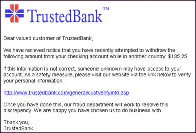
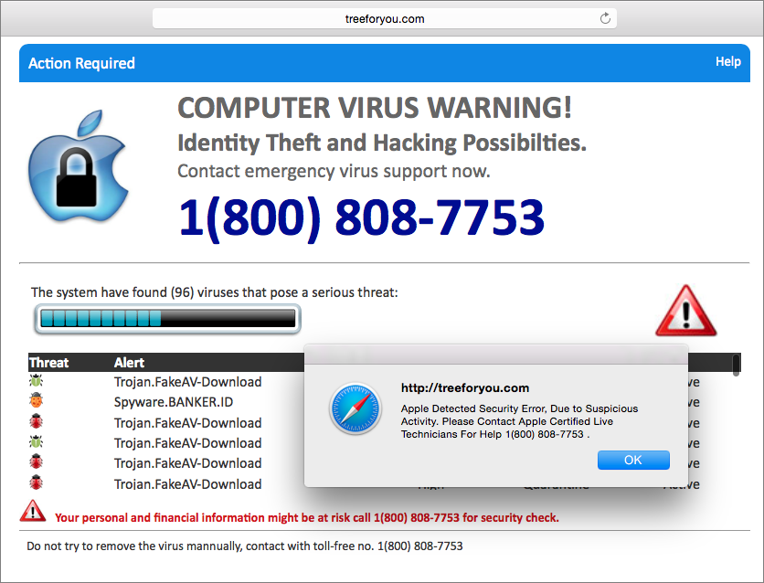
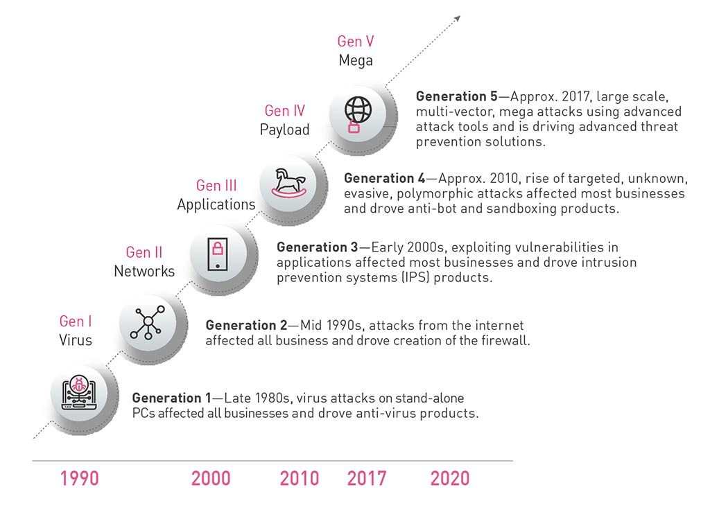

Apart
from hidden privacy risks from using online services, users are also very
likely to be attacked more directly. On the more common and less-technical side
of cyberattacks is social engineering, the act of psychologically manipulating
people into performing actions or divulging confidential information.

A prime example of this is Phishing, the act of creating a fraudulent email or website that is almost identical to a legitimate source, such as a bank statement or a Facebook log-in website, in an attempt to solicit sensitive info like usernames, passwords and credit card details.
An example of a Phishing attempt

A common tech support scam
Another
well-known tactic is organised phone call scams, also known as tech support
scams. Have you ever surfed the web, and pop-ups appear stating that your
device is now infected with a virus? Usually, a phone number is included with
this notification, claiming to be technicians from trusted companies like
Microsoft. If you call this number, a scammer will pick up the phone,
impersonating professionals claiming that only they can help you with the
problem. Then, they would either require a payment, or leave a backdoor virus
on your device, for further exploit.
Moreover,
aggressive, technical attacks aiming at you could also be a possibility. For
instance, if you are a high-profile figure holding confidential company
secrets, you are very likely to be targeted by cybercriminals. They might
attempt to brute-force their way into your account (basically trying to guess
your credentials) using a password dictionary, gain control of your systems
through malwares, or to use multi-vector, polymorphic 5th generation
(Gen V) cyberattacks combining multiple dangerous techniques.

The evolution of cyberattacks [4]